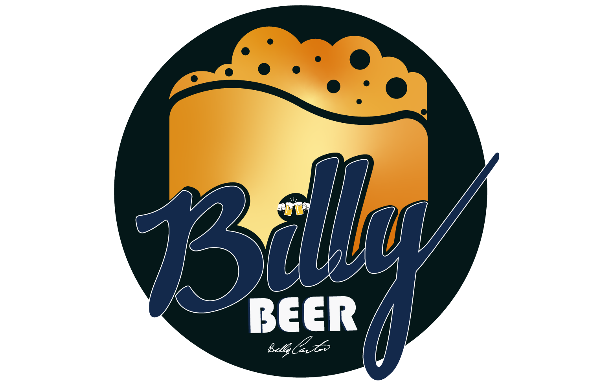
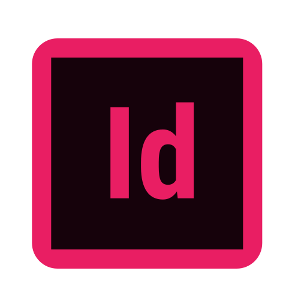
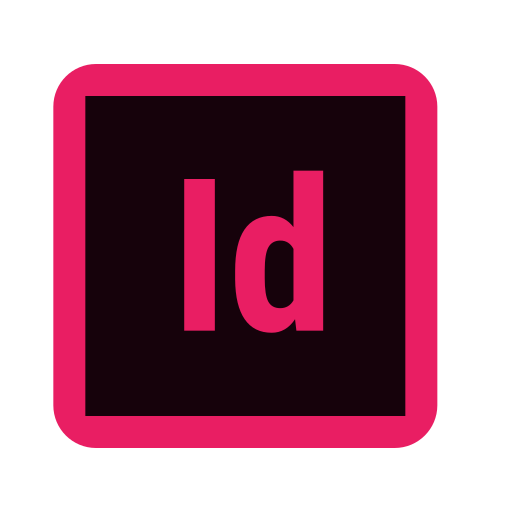

Billy Beer
For this project I rebranded an old brewing brand called Billy Beer. Where I established the brand identity by crafing a new logo, webpage and product label The main goal was to rebrand is as per the current market trend by giving it a modern look and promote it's rebranding through banner ads and website

 
